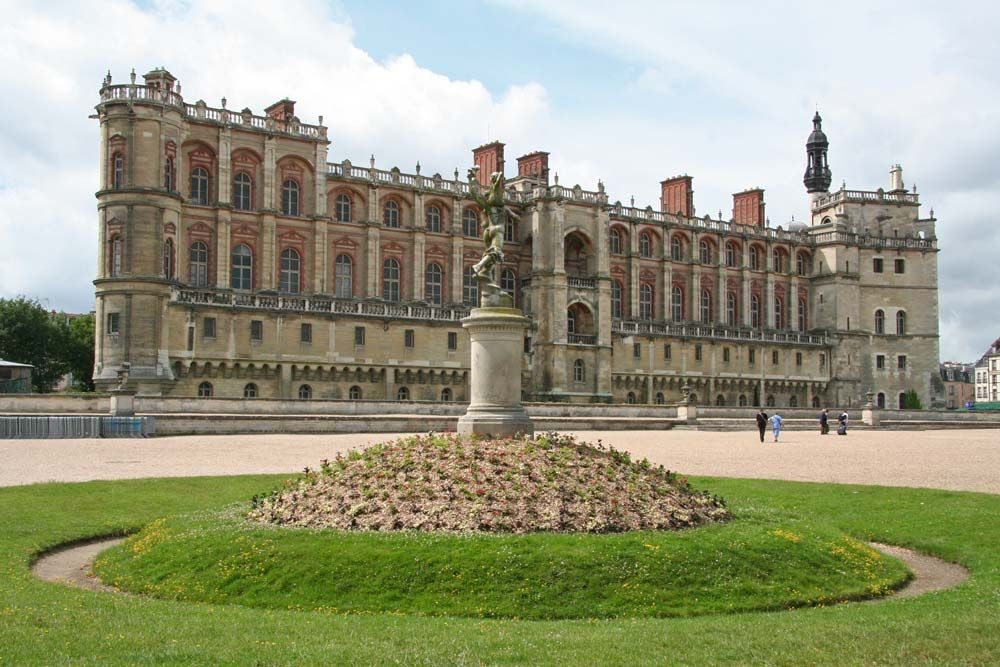

Son Histoire
Le château de Saint-Germain-en-Laye, appelé aussi « Château Vieux » par opposition au « Château Neuf », est une ancienne résidence des rois de France. Il a été le lieu de signature de nombreux traités de paix et d'édits royaux. Situé dans le centre de Saint-Germain-en-Laye dans les Yvelines, il est aujourd’hui consacré au Musée d'archéologie nationale.
À l'origine de Saint-Germain-en-Laye il y a la fondation par le roi Robert le Pieux, au début du xie siècle, d'une église dédiée à Saint-Vincent et à Saint Germain de Paris, dans la forêt de Laye, sur un site élevé au bord du plateau qui domine la Seine. L'église est confiée d'abord à l'autorité de l'Évêque de Paris et au chapitre Notre-Dame, puis de l'abbaye Notre-Dame de Coulombs qui en fait un prieuré. Vers 1124, face au prieuré, le roi Louis VI le Gros (1081-1137) fait construire un palatium, château non fortifié en bois, sur l'emplacement de la cour du château actuel, qui est mentionné pour la première fois dans une charte royale Actum publice apud S.-G. astantibus in palatio nostro....